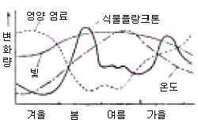
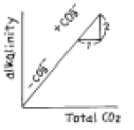

해양환경기사 (2005-05-29 기출문제)
1과목: 해양학개론
1. 현재 염소량으로부터 염분을 환산하는데 사용하고 있는 공식은?
- S = 0.043 + 1.0044×S
- S = 1.8⑤×Cl + 0.03
- S = 1.80655×Cl
- S = 1.00045×Cl
(정답률: 85%)

2. 대양의 표층에서 나타나는 해수순환은 다음 중 어느 힘에 기인되는가?
- 밀도차
- 바람
- 지구자전
- 해양 - 대기간의 열수지
(정답률: 83%)
3. 다음은 해양의 물리적 성질을 설명한 것 중 틀린 것은?
- 해수의 온도구간은 -2 ∼ 30℃ 이다.
- 해수는 열용량이 크고 열전도율이 높다.
- 해수는 자연상태에서 기체, 액체, 고체의 세가지 상이 모두 나타난다.
- 해수의 압력은 10m에 1/2 기압씩 증가한다.
(정답률: 88%)
4. 해수중에 존재하는 질소화합물 중에서 생물생산과 가장 관계가 없는 것은?
- N2
- NO2-
- NO3-
- NH4+
(정답률: 80%)
5. 북회귀선에서 적도근처까지의 해면을 서류하는 우세한 난류는?
- 북적도 해류
- 남적도 해류
- 아라스카 해류
- 적도 반류
(정답률: 87%)
6. 해수의 열염순환(Thermohaline circulation)과 가장 관계가 깊은 것은?
- 바람
- 밀도
- 압력
- 표면장력
(정답률: 80%)
7. 해수 중의 음파속도는 해수의 밀도에 따라 다르다. 다음 중 바르게 설명된 것은?
- 수온, 염분, 압력이 높을수록 음속은 크다.
- 수온, 염분, 압력이 낮을수록 음속은 크다.
- 수온이 낮고 압력이 높은 심층에서 음속은 낮다.
- 수심 약 1000m 부근에서 음속 최대층이 존재한다.
(정답률: 87%)
8. 심해저 시추계획(Deep Sea Drilling Project)의 주목적은 무엇인가?
- 석유 탐사
- 해저 광물자원 조사
- 천연가스 매장량 조사
- 대양저의 진화과정 연구
(정답률: 71%)
9. 대양에 존재하는 해수의 순환을 그 원인에 따라 크게 풍성 순환과 열염분 순환으로 구분할 때, 다음 중 열염분 순환과 관계가 적은 것은?
- 해수의 밀도차
- 표층류
- 심해류
- 느리고 수직성분이 존재한다.
(정답률: 59%)
10. 지진파 중 가장 빠른 속도로 전해져서 어떤 지점이든 가장 먼저 도달하는 파(Wave)는 무엇인가?
- P파
- S파
- L파
- S 및 L파
(정답률: 86%)
11. 다음 중 서안경계류(western boundary current)는?
- 쿠로시오 해류
- 노르웨이 해류
- 북대서양 해류
- 페루해류
(정답률: 83%)
12. 붕단(shelf break)의 평균수심은?
- 100m
- 130m
- 155m
- 200m
(정답률: 66%)
13. 우리나라 연안주변에서 탁월한 조석, 조류, 내부조석의 주기는 얼마인가?
- 약 1/4일
- 수일 이상
- 약 1일
- 약 1/2일
(정답률: 84%)
14. 해수의 열팽창계수 β에 대한 설명이 옳은 것은?
- 염분도가 낮으면 수온에 무관하게 항상 음의 값을 가진다.
- 낮은 수온에서 염분도에 무관하게 항상 음의 값을 가진다.
- 보통 자연조건하의 해수에서 수온이 증가함에 따라 항상 증가한다.
- 수온과 염분도에 무관하다.
(정답률: 78%)
15. 다음의 T-S diagram에 대한 설명 중 옳은 것은?
- Ekman 나선을 나타낸 그림이다.
- 온도와 염분의 상관곡선으로 수괴의 특성을 나타낸다.
- 파랑의 형태를 나타낸 그림이다.
- 북태평양의 표면수온의 분포를 나타낸 그림이다.
(정답률: 88%)
16. 제4기 빙하기에 퇴적된 굴(oyster)의 연령을 측정하는 가장 좋은 방법은?
- TH230 방법
- C14 방법
- B10 방법
- fission-track 방법
(정답률: 82%)
17. 다음 중 석유자원이 부존할 수 있는 암석 구조는?
- 다공질 사암
- 다공질이 아닌 사암
- 투수성이 적은 사암
- 굳은 사암
(정답률: 74%)
18. 북반구에서 취송류의 방향은 바람의 진행방향에 대하여 어느 쪽인가?
- 오른쪽
- 왼쪽
- 같은 방향
- 반대방향
(정답률: 84%)
19. 유기물질이 해저에서 원유로 변하는데 가장 적절한 온도는 얼마인가?
- 50∼70℃
- 30∼100℃
- 50∼150℃
- 100∼300℃
(정답률: 74%)
20. 일반적으로 선박이나 해양구조물에 상당한 피해를 입히는 바다의 오손 생물로서, 유일한 고착성 갑각류는?
- 게류
- 연갑류
- 만각류
- 바닷가재류
(정답률: 82%)
2과목: 해양생태학
21. 다음 중 어류가 최전성기를 이루었던 시대는?
- 캄브리아기
- 시루리안기
- 데본기
- 쥬라기
(정답률: 63%)
22. 다음 중 적조생물이 가지는 독소들로 인한 증상이 아닌 것은?
- 질식 및 호흡장해
- 설사 및 구토
- 기억상실 및 사망
- 조직궤사 및 종양
(정답률: 84%)
23. 갯벌 조간대에 서식하는 저서생물들의 환경에 대한 적응과 관계가 없는 것은?
- 잠입성 이매패는 퇴적물 속 깊은 장소에 서식하므로 대기 온도의 직접 영향을 피한다.
- 간석지 이매패류는 패각내에 고염분수를 가두어 둠으로 서 단기적 저염분에 견딘다.
- 퇴적물 식자는 유기물 함량이 높은 이질 퇴적물에서 최대를 나타낸다.
- 부유하는 다량의 실트 성분은 현탁물 식자의 섭식율을 증가시킨다.
(정답률: 56%)
24. 부레를 갖지 않는 종류는?
- 상어
- 참조기
- 대구
- 참돔
(정답률: 82%)
25. 다음 중 두색류의 특징은?
- 성체는 피낭으로 싸여 있다.
- 대부분의 종류는 성체가 되면 고착 생활을 한다.
- 성체가 되면 배설기, 척색 및 꼬리가 없어지고, 척색신 경관이 퇴화한다.
- 머리에서 꼬리까지 신경색과 척색이 있다.
(정답률: 75%)
26. 척색동물의 특징과 가장 관계가 깊은 것은?
- 완전한 소화계가 없다.
- 생활사의 어떤 시기에 척색을 가진다.
- 이배엽성이고 체강이 잘 발달되어 있다.
- 혈관계는 개방형이다.
(정답률: 79%)
27. 다음 간극동물(Interstitial fauna)에 대한 설명 중 맞는 것은?
- 간극동물은 저서동물의 일종으로 지표동물(Epifauna)과 지중동물(Infauna)를 말한다.
- 간극동물은 극피동물(Echinodermata)중 불가사리류를 말한다.
- 간극동물은 해산 무척추 동물중 자세포(Sting cell)를 갖는 종류를 말한다.
- 간극동물은 저서동물의 일종으로 저질의 모래와 모래 사이의 빈공간에 서식하는 동물을 말한다.
(정답률: 75%)
28. 바다에서 영양염의 주된 공급원이 아닌 것은?
- 수층의 수직혼합
- 용승
- 육수의 유입
- 강우
(정답률: 76%)
29. 다음 중 담수역에 살지만 염분에 대한 현저한 저항력을 가지는 어류는?
- 송사리
- 틸라피아
- 청어
- 철갑상어
(정답률: 59%)
30. 다음 중 갈조류만으로 구성된 것은?
- 청각, 다시마, 미역
- 잘피, 거북풀, 김
- 우뭇가사리, 모자반, 파래
- 미역, 감태, 모자반
(정답률: 68%)
31. 생물체의 함질소유기물의 분해에 의하여 생성되는 과정을 그 순서대로 나열한 것은?
- NH4 - NO2 - NO3
- NO2 - NH4 - NO3
- NO3 - NO2 - NH4
- NH4 - NO3 - NO2
(정답률: 68%)
32. 다음 중 서로 잘못 연결된 것은?
- 인과 질소 - 부영양화(富營養化)
- 오염물 증가 - COD 감소
- 유기물 증가 - 용존산소 감소
- 중금속 오염 - 생물 농축
(정답률: 76%)
33. 다음 그림은 어느 온대지방의 호수에 있는 식물플랑크톤과 수온, 빛, 영양염류의 계절변화를 나타낸 것이다. 동물플랑크톤의 계절변화 그림을 삽입할 경우 어느 것과 가장 닮은 모양을 보이는가?

- 식물플랑크톤
- 수온
- 빛
- 영양 염료
(정답률: 73%)
34. 조하대 연성저질에 서식하는 초대형 저서동물 채집시 주로 사용되는 채집장비는?
- Agassiz trawl
- Bongo net
- van Veen grab
- Smith-McIntyre grab
(정답률: 67%)
35. 해양에 있어서 1차 생산력에 영향을 미치는 가장 중요한 두가지 요인은?
- 물과 영양염
- 태양광선과 수심
- 영양염과 태양광선
- 영양염과 수심
(정답률: 78%)
36. 우리나라 하구 역에서 흔히 볼 수 있는 종이 아닌 것은?
- 참치
- 숭어
- 전어
- 잘피
(정답률: 79%)
37. 다음 중 복족류로만 구성된 것은?
- 산호, 말미잘
- 딱지조개, 고둥
- 고둥, 전복
- 따개비, 갯고사리
(정답률: 74%)
38. 아래 그림은 해수에 있어서 alkalinity와 CO32-와의 관계이다. 만일 해수 1kg 중에서 alkalinity가 2.4meq, 전 CO2양이 2.2millimoles/kg일 때 0.1 millimole의 CaCO3를 더했을때 변하는 현상은?

- 전 CO2는 2.3millimoles/kg 으로 증가하고 alkalinity는 2.6meq/kg이 된다.
- 전 CO2는 2.1millimoles/kg 으로 감소하고 alkalinity는 2.2meq/kg이 된다.
- 전 CO2는 2.3millimoles/kg 으로 증가하고 alkalinity는 2.2meq/kg이 된다.
- 전 CO2는 2.1millimoles/kg으로 감소하고 alkalinity는 2.6meq/kg 이 된다.
(정답률: 71%)
39. 다음은 부유생물이 해수중에서 생활하기 위한 적응을 설명한 것이다. 맞지 않는 것은?
- 가벼운 이온을 체액중에 함유하여 해수와 삼투압을 일치시킨다.
- 가능한 한 작은 체적을 가진다.
- 부속지가 발달하여 침강속도를 줄인다.
- 몸 전체의 운동이나 편모운동을 하여 해수중에 남아있는다.
(정답률: 45%)
40. 다음 중 내생동물에 속하는 것은?
- 조개류, 갯지렁이류
- 해연동물, 말미잘
- 산호, 굴
- 따개비, 갯지렁이류
(정답률: 63%)
3과목: 해양계측학
41. 다음 중 해저면에 퇴적된 딱딱한 모래층(sand layer) 퇴적물을 채취하는데 가장 유용한 것은?
- 피스톤 시추기
- 중력 시추기
- 바이브로 시추기
- 그랩
(정답률: 40%)
42. 퇴적물의 입도 분석 자료로부터 퇴적물 유형(Sediment Type)을 구하는 방법 중 맞는 것은?
- 자갈(Gravel), 모래(Sand), Silt 및 Clay의 함량을 구분하여 3각 다이아그램상에 플로팅한다.
- 자갈(Gravel), 모래(Sand), Silt 및 Clay의 함량을 구분하여 입도 누적 곡선을 이용한 도표 계산법을 한다.
- 입도를 芒 단위로 표시하여 모멘트 계산법을 한 다음 입도분포 특성 지수를 구한다.
- 입도를 芒 단위로 표시하여 입도 누적 곡선을 이용한 도표 계산법으로 입도분포 특성 지수를 구한다.
(정답률: 69%)
43. 1개월 혹은 2개월 정도의 단기 관측으로 얻어진 평균해면 이나 조화상수는 주로 어떤 자료를 참조하여 년 평균 값으로 보정하여 사용하는가?
- 주변 해역 관측치 평균
- 과거 동일지점의 관측 자료
- 인근 표준항 자료
- 주변 해역의 비조화 상수
(정답률: 75%)
44. 우리나라 동해안에서 연안용승이 일어날 가능성이 있는 바람의 방향은?
- 북서풍
- 북동풍
- 남서풍
- 남풍
(정답률: 63%)
45. 저질 조사를 위하여 채취한 시료의 최초 지지력(Initial rigidity)을 측정하는 장치는?
- Viscosimeter
- Picnometer
- Sediment Analyzer
- Sedigraph
(정답률: 56%)
46. 다음 위성 탑재 센서 중에서 해수색을 측정하는 것은?
- AVHRR
- CZCS
- TM
- IR
(정답률: 68%)
47. 다음 중 대기의 창에 해당되는 파장은?
- 10㎛
- 10mm
- 10cm
- 10m
(정답률: 66%)
48. 수온-염분도표(T-S diagram)로 부터 알 수 없는 것은?
- 심층해수 순환
- 수직 안정도
- 수괴의 혼합
- 대기나 해저에 의한 수괴의 변질
(정답률: 72%)
49. 해양의 일차생산율은 생태학적으로 중요한 의미를 갖고 있다. 다음 일차 생산율을 알기 위해 사용되는 방법이 아닌 것은?
- 방출되는 산소량의 측정
- pH의 변화측정
- 일조량 측정
- 14C에 의한 CO2의 섭취량 측정
(정답률: 55%)
50. 조석의 조화분석시에 실용적으로 매우 중요한 4개 주요 분조가 맞는 것은?
- M2 S2 N2 K2
- K1 O1 P1 Q1
- M2 S2 P1 Q1
- M2 S2 K1 O1
(정답률: 58%)
51. 해저지형의 관찰로 대양저산맥의 확장을 연구하려 한다. 다음 중 어떤 기기가 가장 적당한가?
- 수중카메라
- 측면주사 음향탐사기
- 음향측심기
- 해상중력계
(정답률: 66%)
52. 해수중의 부유입자(플랑크톤 포함)를 크기별로 계수하는데 사용하는 기기는?
- flowmeter
- coulter counter
- side-scam sonar
- scintillation counter
(정답률: 64%)
53. 정밀측심기(PDR)는 다음 중 어느 측심기(echo sounder)에 해당되는가?
- Narrow-beam echo sounder
- Intermediate-beam echo sounder
- Wide-beam echo sounder
- Beam 과는 관계 없음
(정답률: 55%)
54. 해저열수 화산활동으로 인해 주로 공급되는 성분이 아닌 것은?
- 철
- 황화물
- 메탄
- 납
(정답률: 55%)
55. 국제해양학 위원회는 정확한( ⓐ )량을 미리 정하여 이를 전세계 해양관측 자료분석에 제공하여 사용하기로 결정하고, 북대서양 중앙부의 해수를 채취하여 약 ( ⓑ )mℓ의 량을 유리 앰플에 넣어 배부 사용하고 있고 이를 ( ⓒ )라 한다. 각 괄호 안에 해당하는 것은?
- ⓐ 산소,ⓑ 230, ⓒ 표준해수(normal sea water)
- ⓐ 밀도,ⓑ 1,000, ⓒ 표준해수(normal sea water)
- ⓐ 온도,ⓑ 500, ⓒ Copenhagen sea water
- ⓐ 염소,ⓑ 230, ⓒ 표준해수(normal sea water)
(정답률: 64%)
56. 수심이 깊은 해역의 10km 떨어진 두 정점사이에서 해수면의 높이의 차가 10cm라고 하면 유속은 얼마인가? (단, 대기의 영향은 무시하고, f=10-4/sec, g=1,000cm/sec2로 가정한다.)
- 0.1 cm/sec
- 1.0 cm/sec
- 10 cm/sec
- 100 cm/sec
(정답률: 54%)
57. 다음 항구중 만조가 가장 늦게 나타나는 곳은?
- 목포
- 군산
- 인천
- 진남포
(정답률: 67%)
58. 국제적으로 사용되는 표준수심(standard depth)을 m로 나타낸 것은?
- 0, 20, 40, 60, 80,100, ....
- 10, 30, 50, 70, 90, 110, ....
- 0, 50, 100, 150, 200, 250, ....
- 0, 10, 20, 30, 50, 75, .....
(정답률: 78%)
59. 해양에서 위치 측정을 위해 현대에서 가장 많이 쓰이는 장비는?
- Radar
- Secstant
- GPS
- Trisponden
(정답률: 73%)
60. 어느 선박에서 음향 측심기로 음파를 발신하여 수신할 때 까지의 시간이 10초 였을때 수심은? (단, 해수 중의 음파속도는 약 1,500m/sec이며, 수면에서 송수파기까지의 길이는 3m였다.)
- 15,003m
- 7,497m
- 14,997m
- 7,503m
(정답률: 56%)
4과목: 해수의 수질분석
61. 다음 중 해수와 퇴적물의 유기인이나 PCB 분석용 시료의 보관에 적당한 용기는?
- 저밀도(low density) 폴리에틸렌병
- 고밀도(high density) 폴리에틸렌병
- PVC 재질병
- 경질 유리병
(정답률: 52%)
62. 흡광도 분석에서 고려하지 않아도 되는 것은 다음 중 어느 것인가?
- 착색물질, 유기물질, 현탁물질 등의 공존
- 흡광도를 측정해야 할 발색물질의 안정성
- 분석실의 조도
- 온도, pH, 반응시간 등의 발색조건
(정답률: 64%)
63. 해양환경공정 시험방법으로 Ni를 정량할 때 일반적인 Ni의 유효 측정 범위는?
- 검출한계∼10㎍ Ni/ℓ
- 검출한계∼20㎍ Ni/ℓ
- 검출한계∼50㎍ Ni/ℓ
- 검출한계∼100㎍ Ni/ℓ
(정답률: 53%)
64. 퇴적물의 입자구분과 파이(φ)로 나타낸 입자직경을 서로 연결시킨 것들 중 틀린 것은?
- 조립사 -- 0∼1ø
- 세립사 -- 3ø
- 미세립사 -- 4ø
- 실트(silt) -- 6ø
(정답률: 62%)
65. 원자흡광광도법을 위한 용매추출법(전처리방법) 중 사용되는 시약의 용도가 잘못된 것은?
- DDTC : 금속과 착화합물 형성
- MIBK : 착색제
- 구염산이암모늄 : 금속수산화물의 침전방지
- 메타크레졸퍼플 알콜용액 : 지시약
(정답률: 57%)
66. 해수의 COD 분석용 시료를 보관할 때 4℃에서 냉장보관하는 이유는?
- 보관중 COD 성분이 휘발하는 것을 방지하기 위해
- 침전하는 것을 방지하기 위해
- 해수중 미생물에 의해 분해되는 것을 방지하기 위해
- 용기벽에 흡착되는 것을 방지하기 위해
(정답률: 69%)
67. 규산염 착화합물의 정량을 위한 분광광도계의 파장의 범위로 맞는 것은?
- 220 ∼ 450nm
- 400 ∼ 700nm
- 450 ∼ 900nm
- 900 ∼ 1,500nm
(정답률: 53%)
68. HEPA 여과시설 및 수평기류가 가능한 청정시설이 필수적인 해수 중 성분은?
- 총 유기탄소
- 질산 질소
- 미량금속성분
- 유기인
(정답률: 51%)
69. 페놀류의 측정방법은 4-아이소안티피린과 페리시안화 칼륨을 이용하여 만들어진 안티피린계색소의 흡광광도를 측정한다. 이 때 사용되는 파장의 길이는?
- 245nm
- 436nm
- 460nm
- 515nm
(정답률: 54%)
70. 다음 중 ICP-MS에 의한 측정이 적절하지 않은 성분은?
- Pb
- Cu
- As
- Zn
(정답률: 48%)
71. 규산염 측정을 위한 시료가 부유물질 등에 의한 혼탁도가 심한 경우, 취해야 할 처리방법은?
- 가라앉혀 상등액만을 사용한다.
- 끓인다
- Nuclepure여과지로 여과하여 분석한다.
- 원심분리 초음파 처리한다.
(정답률: 63%)
72. 암모니아 질소성분 분석시 최종 생성물인 인도페놀의 흡광도를 측정한다. 이때, 분석오차를 줄이기 위한 적절한 pH값은 어느 것인가?
- pH 2
- pH 5
- pH 7.8
- pH 10.8
(정답률: 54%)
73. 윙클러법에 의한 해수중의 용존산소 측정에서 산소 고정시약을 넣고 흔들어 주었을 때 수산화 망간의 갈색 침전이 생성된다. 이 망간의 원자가는?
- +1
- +3
- +5
- +7
(정답률: 66%)
74. ICP-MS 를 이용하여 중금속 분석을 할 때 사용되는 Ar(알곤) 기체의 순도로 적절한 것은?
- 70%
- 80%
- 90%
- 99.999%
(정답률: 74%)
75. 해수의 pH 측정에 관한 다음 설명 중 틀린 것은?
- pH는 해수의 온도와 압력의 변화에 따라 측정값이 달라진다.
- pH는 25℃, 대기압하에서 측정하도록 되어 있으므로 항온조에 넣어서 온도를 25℃로 맞춘 후에 측정한다.
- pH 7 표준용액이 없으면 pH 4와 9 표준용액을 사용하여 pH 미터를 검정(calibration)하여도 상관없다.
- 유리전극은 사용하지 않을 때 물에 담그어 보관하는 것이 좋다.
(정답률: 58%)
76. PCB의 측정에 가장 알맞은 분석장비는?
- HPLC
- 분광광도계
- AA
- GC-ECD
(정답률: 57%)
77. 해수 시료 중 Cu성분의 분석에 사용되는 가장 적절한 분석장비는 어느 것인가?
- 분광광도계
- 원자흡광광도계
- 적외선 광도계
- 형광 광도계
(정답률: 65%)
78. 세키 디스크(Secchi disc)로 재는 해수의 수질 지수는?
- 전기전도도
- 밀도
- 염분도
- 투명도
(정답률: 68%)
79. 반복 측정실험에서 어떤 측정값이 다른 측정값에 비하여 이상하게 나왔을 경우 그 값을 통계 처리할 때 제외하여야 하는지 여부를 판단하는데 사용하지 않는 것은?
- 분석기기 편차
- 2.5 평균편차 규칙 (2.5d rule)
- 4 평균편차 규칙 (4d rule)
- 신뢰구간
(정답률: 44%)
80. 규산규소의 측정시 일차적으로 착화합물을 형성시켜, 분광광도계로 이 착화합물의 최대흡광도를 측정한다. 이 착화합물은 무엇인가?
- EDTA 착화합물
- 몰리브덴산 착화합물
- APDC 착화합물
- 피롤리딘 유기착화합물
(정답률: 54%)
5과목: 해양관련법규
81. 유류오염손해배상보장법상 선박소유자의 손해배상책임을 제한할 수 있는 경우는 다음의 어느 협약 가입국 선적의 선박 소유자인가?
- 1992년 유류오염 민사책임협약
- 1982년 유엔해양법협약
- 1971년 국제보상기금협약
- 1969년 유류오염사고에 대한 공해상 개입에 관한 국제협약
(정답률: 41%)
82. 해양환경보전 자문위원회의 기능이 아닌 것은?
- 해양환경보전 종합정책수립 심의
- 해양환경 보전을 위한 주요사항 조사·연구 심의
- 해양오염 피해 예방에 관한 사항 심의
- 해양오염사고시 방제조치계획 수립에 관한 사항 심의
(정답률: 41%)
83. 다음 중 유류오염 손해배상보장법의 적용 범위는?
- 대한민국의 영역 및 배타적 경제수역
- 대한민국의 접속수역 및 배타적 경제수역
- 대한민국의 내수 및 접속수역
- 대한민국의 내수 및 영해
(정답률: 53%)
84. 산적 유류를 화물로서 운송하는 선박 소유자는 몇 톤 이상인 경우 반드시 유류오염손해배상보장 계약을 체결 하여야하는가?
- 100 톤
- 200 톤
- 300 톤
- 400 톤
(정답률: 57%)
85. 다음 중에서 유류오염손해배상보장법이 적용되는 유류의 종류가 아닌 것은?
- 원유
- 중유
- 휘발유
- 윤활유
(정답률: 44%)
86. 해양오염방지법상 정하고 있는 해역관리청으로 해양수산부장관의 관할 해역이 아닌 것은?
- 우리나라 배타적 경제수역
- 영해 및 접속 수역법에 의한 영해
- 항만법 규정에 의한 지정항만
- 어항법 규정에 의한 제1종 어항
(정답률: 60%)
87. 공유수면매립의 경우 매립기본계획의 기간단위는 몇 년이며 이에 대한 타당성 검토는 몇년 마다 하게 되어 있는가?
- 10년, 5년
- 7년, 3년
- 5년, 2년
- 3년, 1년
(정답률: 59%)
88. 다음 중 선박의 오염방지관리인의 업무가 아닌 것은?
- 기름기록부 또는 유해액체물질 기록부의 기록 및 보관
- 해양오염 방지설비의 설치
- 해양오염 방제자재 및 약제 관리
- 기름배출 사고시 신속한 신고 및 응급조치
(정답률: 49%)
89. 연안관리법상 연안정비사업의 시행에 소요되는 경비의 부담자는?
- 항만시설의 이용자
- 연안 어패류 수산조합
- 연안 정비사업 시행자
- 연안거주 주민
(정답률: 63%)
90. 유류오염 손해배상 보장법상 선박소유자 손해배상의 면책이 인정되는 경우는?
- 유조선의 감항성이 부족한 경우
- 용선자의 상사과실로 발생한 경우
- 제3자의 고의만으로 발생한 경우
- 타선과 쌍방과실로 충돌한 경우
(정답률: 68%)
91. 유류오염 손해배상보장법상 국제기금 분담금 부담자는?
- 유조선 정기용선자
- 유조선 나용선자
- 유조선 소유자
- 유류 수령인
(정답률: 49%)
92. 해양오염방지협약상 가장 가까운 육지란?
- 연안국의 내수선
- 연안국의 평수구역
- 연안국의 영해기선
- 연안국의 항계
(정답률: 55%)
93. 해양오염방지법 규정에 의해 2명의 오염방지 관리인이 필요한 선박은?
- 유해액체물질 선적운반 선박
- 초대형급 유조선
- 석유탐사선
- 해양과학 조사선
(정답률: 68%)
94. 유류오염 손해에 포함되지 않는 것은?
- 방제조치의 비용
- 선박 내부의 오염손실
- 환경 손상으로 인한 이익상실
- 방제조치로 인한 추가손실
(정답률: 55%)
95. 해양오염방지법상 해역수질 개선을 위한 오염물질의 유입방지시설의 설치에 해당하지 않는 것은?
- 하수종말처리시설
- 분뇨처리시설
- 축산폐수처리시설
- 핵폐기물처리시설
(정답률: 64%)
96. 해양오염방지법상 기름오염 비상계획서에 포함될 사항은?
- 선박의 방제조치
- 물밸러스트 또는 세정수의 배출
- 연료유 및 윤활유의 수급
- 기름배출 감시 제어장치의 상태
(정답률: 40%)
97. 유류오염 손해배상 보장법의 궁극적인 목적은?
- 유류오염 피해의 명확하고 합리적인 보상
- 유류오염 피해자의 보호와 선박에 의한 유류 운송의 건전한 발전 도모
- 유류오염사고가 발생한 선박소유자의 책임을 명확히하여 피해자 보호
- 선박에 의한 유류오염사고의 책임한계와 보상기준 설정
(정답률: 50%)
98. 기름기록부는 최종 기재 후 얼마 동안 보존해야 하는가?
- 1년
- 3년
- 5년
- 10년
(정답률: 42%)
99. 해역별 수질기준 등급중 1등급 해역에 해당되는 화학적 산소요구량(mg/ℓ)은?
- 1 mg/ℓ이하
- 2 mg/ℓ이하
- 3 mg/ℓ이하
- 4 mg/ℓ이하
(정답률: 56%)
100. 다음 중 선박으로부터 모든 종류의 오염물질에 의한 해양오염방지사항을 가장 포괄적으로 규제하기 시작한 국제협약은?
- OILPOL 1954
- INTERVENTION 1969
- LC 1972
- MARPOL 73/78
(정답률: 65%)